Okay, let's break down this Microsoft Dynamics 365 question together. It's asking if applying the "Operational Workspaces" pattern in a form is the right way to make tabs display vertically. Essentially, it wants to know if this specific pattern in Dynamics 365 form design is the correct method for achieving vertical tab alignment.
The question is focused on the visual layout of tabs within a form in Dynamics 365. Forms are fundamental for displaying and interacting with data, and how information is presented on them (like tab organization) greatly impacts user experience. The mention of "Operational Workspaces" refers to a specific design pattern in Dynamics 365, a pre-defined template or approach used to structure forms. These patterns guide developers on how to lay out elements for certain common scenarios or types of forms. The "Operational Workspaces" pattern is particularly geared towards creating workspaces where users perform tasks. These workspaces often contain various sections, including tabs.
The core issue here is whether the Operational Workspaces pattern inherently supports or is designed for vertical tab alignment. This is important because tabs are typically displayed horizontally by default in many user interfaces. Vertical tabs can be useful for certain types of information display or when dealing with a large number of tabs that would be difficult to manage horizontally.
Based on the explanation of the question and the need to display tabs in a vertical alignment, the Operational Workspace pattern isn't specifically designed for vertical tabs. Instead, patterns like "Table of Contents" or potentially a custom design would be more suitable for achieving this. Operational Workspaces are more about organizing different sections of a workspace, and while they do include tabs, the default orientation of those tabs isn't necessarily vertical. Therefore, the solution presented does not meet the goal.
Thus, the answer is no.
Let's dissect this Dynamics 365 question. It's centered around a scenario where you've created a new form and the goal is to arrange the tabs on this form vertically. The proposed solution is to use the "Details Master" pattern. So, the crux of the question is whether this particular pattern, the "Details Master," is the right choice for achieving vertical tab alignment in a Dynamics 365 form.
In Dynamics 365, form patterns are like blueprints that dictate the layout and behavior of forms. They are standardized designs that help ensure consistency and efficiency in how forms are structured. The "Details Master" pattern is one such blueprint, typically used for forms that display a list of records (the "master" part) along with detailed information about a selected record (the "details" part). This pattern usually includes a grid or list to show the master records and a separate area to show the details.
The question of vertical tab alignment is significant because it affects how users navigate and interact with the information on the form. Tabs are a common way to organize different sections or categories of information, and their orientation (horizontal or vertical) can impact the form's usability and the overall user experience. Vertical tabs can be particularly useful when there are many tabs or when the content within each tab is quite extensive.
Now, regarding the "Details Master" pattern, it's important to note that this pattern is more about the relationship between a list of records and their detailed views, rather than specifically about tab orientation. While it is common for the details section to use tabs to organize information, the "Details Master" pattern doesn't inherently define these tabs to be vertical. Therefore, applying the "Details Master" pattern alone might not automatically result in vertical tabs. It might require additional customization or the use of a different pattern altogether, such as the "Table of Contents" pattern that is specifically designed for vertical navigation.
Given this understanding, simply applying the Details Master pattern doesn't guarantee vertical tab alignment. It might be part of the solution, but it's not the complete answer. The pattern facilitates the display of master and detailed information, but the orientation of tabs is a separate design consideration. Thus, the solution does not meet the goal.
So, the answer is no.
This is a Dynamics 365 Finance developer question presented in a "Hotspot" format, which means you need to select the correct options from a visual representation, although in this case, the visual is just described textually. The scenario is straightforward: you're a developer needing to monitor the system's performance. The question asks which tools you should use, and it implies there are three correct answers to select.
The question is testing your knowledge of the various tools available within the Dynamics 365 ecosystem for performance monitoring. Performance monitoring is crucial in development and maintenance because it helps identify bottlenecks, inefficiencies, and areas where the system might be underperforming. This could involve slow-running code, database query issues, or problems with how the system interacts with external services or clients.
Let's delve into the tools mentioned and why they're relevant:
LCS Environment Monitoring tool: LCS (Lifecycle Services) is a cloud-based collaborative workspace used for managing Dynamics 365 projects. Its Environment Monitoring tool is specifically designed to provide insights into the health and performance of your Dynamics 365 environments. It offers real-time monitoring capabilities, allowing you to track various metrics and identify potential issues.
Trace Parser: This tool is used for analyzing traces, which are detailed logs of events and operations within Dynamics 365. The Trace Parser can help you understand the sequence of operations, identify long-running processes, and pinpoint performance bottlenecks in your code or database interactions. It's particularly useful for diagnosing complex performance issues.
SQL Profiler: This is a tool for monitoring events on a SQL Server instance, which is relevant because Dynamics 365 often relies on SQL Server for its database. SQL Profiler can capture events like query executions, stored procedure calls, and other database activities. It helps in identifying slow queries or other database-related performance problems.
Fiddler: Fiddler is a web debugging proxy that logs all HTTP(S) traffic between your computer and the internet. It's useful for debugging issues related to web requests, APIs, and external service interactions. In the context of Dynamics 365, Fiddler can help identify performance issues related to web services, integrations, or client-side operations.
Now, let's consider which tools are most appropriate for the tasks described in the question:
Considering these points, the correct tools to use are the LCS Environment Monitoring tool for overall environment health, Trace Parser for code performance, and SQL Profiler for SQL database performance.
Therefore, the first option should be the LCS Environment Monitoring tool, the second option should be Trace Parser, and the third option should be SQL Profiler.
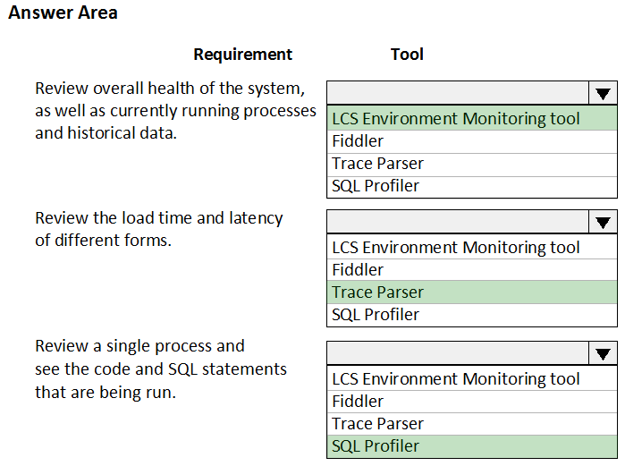
This question is about navigating and viewing elements within a Dynamics 365 Finance development environment, specifically using Visual Studio on a virtual machine. The goal is to understand how to display elements organized by their respective models. In Dynamics 365 development, models are a fundamental concept. They serve as containers for organizing and managing different elements of the application, such as code, forms, reports, and other metadata. Being able to view elements by model is crucial for developers to manage, understand, and modify the application effectively.
The question presents four options, each suggesting a different approach to achieve this view:
Select Model management from the menu and then select View all package dependencies: This option is related to managing models and their dependencies, but it doesn't directly address the need to display elements within each model. Package dependencies are about how different models relate to and rely on each other, not about the contents of the models themselves.
Right-click the Application Object Tree (AOT) node in Application Explorer and select Model View: This option is directly related to how elements are organized and displayed in the development environment. The AOT is a hierarchical representation of all the elements in Dynamics 365. Switching to "Model View" within the AOT changes the organization from a type-based structure (like Forms, Classes, etc.) to a model-based structure, which is precisely what the question is asking for.
Select Metadata Search from the Dynamics 365 menu: Metadata search is a powerful tool for finding specific elements based on various criteria, but it doesn't provide a structured view of all elements organized by model. It's more about searching than browsing.
Select Model Management from the menu and then select Refresh Models: Refreshing models is an important action to ensure the development environment is synchronized with the underlying model definitions, especially after updates or changes. However, it doesn't change how elements are displayed in the Application Explorer.
Based on this analysis, the most appropriate action to display elements by model is to use the Application Explorer's Model View. This directly addresses the requirement of organizing and viewing elements based on the models they belong to.
Therefore, the answer is to right-click the Application Object Tree (AOT) node in Application Explorer and select Model View.
Alright, let's tackle this Dynamics 365 Finance "Hotspot" question. We're dealing with a development environment and need to set up default filters on a fleet management form. The specific requirements are to show only sales from the current sales period and those where the Customer name field includes the text "Wholesales".
This question is essentially about understanding how to construct queries and apply filters within Dynamics 365 forms. Filtering is a common requirement in business applications to help users narrow down data to a relevant subset. In this case, we have two criteria: one based on a date range (current sales period) and another based on text within a field (Customer name).
Let's break down the components we need to figure out:
SysQuery Method: This refers to methods used in Dynamics 365 to programmatically construct queries. These methods are part of the SysQuery class and are used to define ranges, sorting, and other query parameters. We need to determine the appropriate method for defining a date range.
SysQueryRangeUtil Method: SysQueryRangeUtil is a utility class that provides helper methods for creating common types of query ranges, particularly date ranges. The task here is to identify the correct method from this class that represents the current sales period.
Filter Clause: This part is about constructing the actual filter expression for the Customer name. We need to find the correct syntax to filter records where the Customer name contains the specific text "Wholesales".
Now let's analyze the probable correct options:
For the SysQuery Method, when adding a filter to a query, we typically use addRange to specify the field we're filtering on. This method allows us to define a range for that field.
For the SysQueryRangeUtil Method, we're looking for a method that represents the current sales period. The dateRange method is commonly used to define a range between two dates. We would use this in conjunction with functions or parameters that define the start and end of the current sales period.
For the Filter Clause on the Customer name, we need a wildcard search that finds names containing "Wholesales". In Dynamics 365 query syntax, the asterisk (*) is used as a wildcard character. So, the correct filter clause would be Wholesales, which means any text before and after "Wholesales" is acceptable.
Considering this, to filter sales in the current sales period, we'd use the addRange method to specify the sales date field and then use dateRange from SysQueryRangeUtil to define the current period. To filter by Customer name containing "Wholesales", we'd use addRange on the Customer name field and set the value to Wholesales.
Therefore, we would use the addRange SysQuery method, the dateRange SysQueryRangeUtil method, and *Wholesales* as the filter clause.
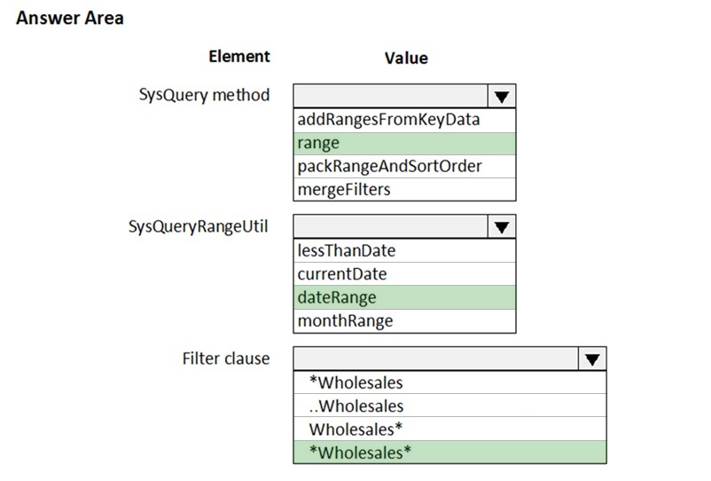
This Dynamics 365 question is about the process of deploying a software package to a test environment. Specifically, it focuses on the preparatory steps, asking for two distinct methods to get a package ready for deployment. The core of this question lies in understanding the tools and workflows involved in Dynamics 365 development and deployment, particularly the roles of Visual Studio, Azure DevOps, and Lifecycle Services (LCS).
Let's break down each option and see how it fits into the deployment process:
In Visual Studio, export the project and upload the project to the asset library: In Dynamics 365 development, Visual Studio is used to create and modify code and other elements. Exporting a project typically involves packaging the code and metadata into a format that can be deployed. The asset library in LCS is a central repository for storing various assets, including deployable packages. However, simply exporting a project and uploading it might not create a proper deployable package, as it might lack the necessary structure and metadata required for deployment.
In Azure DevOps, queue a build from the corresponding branch and upload the model to the asset library: Azure DevOps is used for source control, build automation, and release management. Queuing a build usually involves compiling the code, running tests, and creating a deployable package. Uploading a "model" to the asset library, however, is not the standard practice for deployment. Models are more about development-time organization than deployment artifacts.
In Azure DevOps, queue a build from the corresponding branch and upload the package to the asset library: This option aligns well with the typical Dynamics 365 deployment workflow. A build in Azure DevOps can be configured to produce a deployable package, which is the standard format for deploying customizations and code changes. Uploading this package to the LCS asset library makes it available for deployment to different environments.
In Visual Studio, create a Dynamics 365 deployment package and upload the package to the asset library: Visual Studio does indeed provide tools for creating deployable packages directly. This is a valid way to prepare a package for deployment. Once the package is created, uploading it to the LCS asset library is the correct next step to make it available for deployment.
Based on this analysis, the two options that correctly describe how to prepare for deploying a software deployable package are the ones involving creating and uploading a deployable package, either through Azure DevOps build process or directly in Visual Studio.
Therefore, the two ways to achieve the goal are to queue a build from the corresponding branch in Azure DevOps and upload the package to the asset library, and to create a Dynamics 365 deployment package in Visual Studio and upload the package to the asset library.
This is a drag-and-drop question revolving around setting up a developer environment in Dynamics 365 Finance using Team Explorer, with a focus on managing code through branching and merging. The scenario involves multiple developers working on a customization, and the goal is to ensure all code is checked in and merged correctly into the appropriate branches.
The question tests your understanding of source control best practices within the context of Dynamics 365 development, particularly using Azure DevOps (formerly known as Visual Studio Team Services or VSTS) and its integration with Visual Studio's Team Explorer. Branching and merging are essential for managing concurrent development work, allowing developers to work on features or bug fixes in isolation before integrating their changes into a shared branch.
Let's analyze the actions provided and determine their logical order:
Connect to the Microsoft Azure DevOps project: This is the foundational step. Before any source control operations can be performed, you need to establish a connection between your local development environment (Visual Studio with Team Explorer) and the Azure DevOps project where the codebase resides.
Map the Microsoft Azure DevOps project to your local developer machine: Mapping creates a link between a folder on your local machine and a folder in the Azure DevOps project's repository. This is crucial for synchronizing code between your local environment and the server. You need to connect before you can map. Additionally, you generally map after creating at least your main branch.
Create a main branch: In most branching strategies, the main branch (often called "main" or "trunk") serves as the primary branch that reflects the production-ready state of the code. It's usually the starting point from which other branches are created.
Create a test branch: A test branch is typically used for testing changes before they are merged into the main branch. It's often created from the main branch.
Create a dev branch: The dev branch is where developers typically perform their day-to-day work. It's often created from the main branch and is used as the integration point for feature branches.
Now, considering the dependencies between these actions, we can deduce a logical order. You first need to connect to the Azure DevOps project. Then, you'd typically create the main branch as the foundation. After the main branch is established, you would create the dev and test branches, usually branching off from main. Finally, you would map your local developer machine to the Azure DevOps project, likely mapping to specific branches you intend to work with. It is important to note that mapping can be done at different points, but it logically follows the creation of at least the main branch.
Therefore, one correct order is: Connect to the Microsoft Azure DevOps project, Create a main branch, Create a dev branch, Create a test branch, Map the Microsoft Azure DevOps project to your local developer machine. Another correct order would be: Connect to the Microsoft Azure DevOps project, Create a main branch, Create a test branch, Create a dev branch, Map the Microsoft Azure DevOps project to your local developer machine.
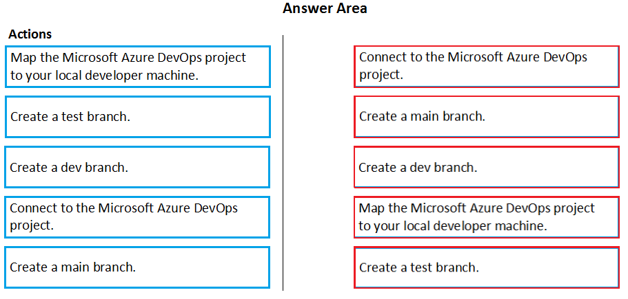
This question focuses on the creation of an extension class in Dynamics 365 Finance. Extension classes are a crucial part of the Dynamics 365 extensibility model, allowing developers to add functionality to existing classes without modifying the original code directly. This approach, known as "extension-based customization," helps maintain the integrity of the base application and simplifies upgrades.
The question asks what specific action you should take when creating an extension class. Let's analyze each option:
Mark the class as final: In object-oriented programming, a final class cannot be further extended or subclassed. In the context of Dynamics 365 extension classes, marking the class as final is essential. It prevents other developers from extending your extension class, ensuring that the behavior you've defined remains consistent.
Add the class buffer as the first parameter: This option is related to the concept of "wrapping" methods in extension classes. When you extend a method in an extension class, you often need to access the original object's data. This is sometimes done by passing a "buffer" (essentially, the object's data) as a parameter. However, this is not a strict requirement for creating an extension class itself and is more related to how you implement methods within the extension.
Mark the class as protected: The protected access modifier restricts access to a class member to the class itself and any derived classes. In the case of extension classes, since they are final and cannot be extended, marking them as protected would not be meaningful or useful.
Mark the class as public: While extension classes need to be accessible to the system to function, marking them as public is not the defining characteristic. The focus is on their structure and attributes rather than just their visibility.
Based on this understanding, the most important action when creating an extension class is to ensure it cannot be further extended. This is achieved by marking it as final.
Therefore, the correct action is to mark the class as final.
This question focuses on explaining the core concepts of models, packages, and projects to a new Dynamics 365 Finance developer. These concepts are fundamental to understanding how development is structured and how customizations are managed and deployed in Dynamics 365.
Let's break down each concept and then analyze the provided options:
Model: A model is a container for organizing elements (like code, forms, reports, etc.) within the development environment. It's a design-time concept, meaning it's used during development to structure and manage code and metadata. A model represents a logical grouping of elements, often related to a specific module or functionality.
Package: A package is a deployable unit. It contains one or more models and is used to move code and customizations between different environments (development, test, production, etc.). A package is essentially a compiled and bundled version of one or more models.
Project: A project, in the context of Visual Studio and Dynamics 365 development, is a container for organizing the files and elements related to a specific development task or customization. It's where developers write code, design forms, and manage other development artifacts.
Now let's analyze the options:
A project can contain elements from multiple models: This statement is incorrect. In Dynamics 365 Finance, a Visual Studio project is typically associated with a single model. This helps maintain a clear structure and separation of concerns.
A model is a group or collection of elements that constitute a distributable software solution: This statement is correct. A model groups related elements and can be part of a distributable solution (packaged for deployment).
A Visual Studio project can belong to more than one model: This statement is incorrect, as explained earlier. A project is generally tied to a single model.
A model is a design time concept: This statement is correct. Models are used during development to organize and manage code and metadata.
A package is a deployment unit that may contain one or more models: This statement is correct. Packages are used for deployment and can contain one or multiple models.
Based on this analysis, the correct design concepts to explain are that a model is a group of elements constituting a software solution, a model is a design-time concept, and a package is a deployment unit containing one or more models.
Therefore, the correct answers are: A model is a group or collection of elements that constitute a distributable software solution, A model is a design time concept, and A package is a deployment unit that may contain one or more models.
This is a drag-and-drop question focused on Dynamics 365 Finance, specifically about adding a filtered customer list to a workspace. Workspaces are customizable dashboards that provide users with quick access to frequently used forms, reports, and tasks. The ability to add filtered lists to workspaces enhances their utility by allowing users to see relevant subsets of data directly from their workspace.
The question tests your understanding of the steps involved in personalizing a workspace by adding a filtered list. Let's analyze the actions provided and determine the correct sequence:
Open the customer form and apply filters to the grid: This is the logical first step. Before you can add a filtered list to a workspace, you need to define the filter criteria on the source form, in this case, the customer form.
Select the General menu item then select Add to workspace: This is not the standard way to add filtered forms to workspace. There is no general menu item.
Select the Options actions pane tab and then select Add to workspace: This is the correct next step. In Dynamics 365, the Options tab on the Action Pane often contains personalization options, including the ability to add elements to workspaces.
Select Workspace and Presentation options: After selecting Add to workspace, you'll be presented with options to choose the target workspace and how the list should be presented (e.g., as a tile, a list, or a link).
Select Configure: Once you've chosen the workspace and presentation style, you often need to configure further details, such as which fields to display in the list.
Based on this logical flow, the correct sequence of actions is to first open the customer form and apply the desired filters, then use the Add to workspace option under the Options tab, followed by selecting the target workspace and presentation options, and finally configuring the details of the list.
Therefore, the correct order is: Open the customer form and apply filters to the grid, Select the Options actions pane tab and then select Add to workspace, Select Workspace and Presentation options, Select Configure.
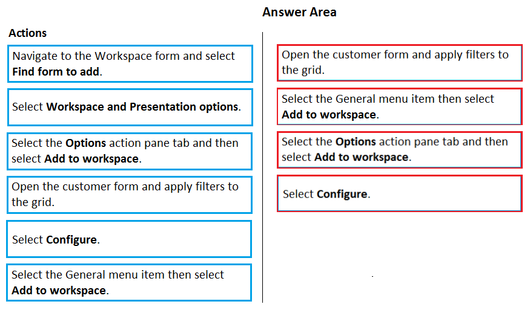
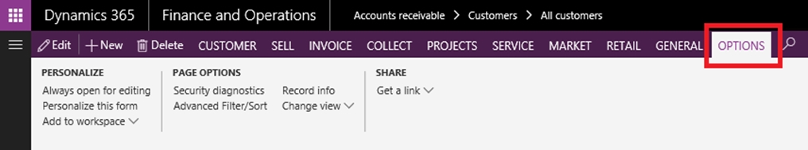
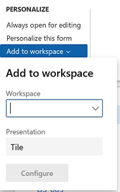
This drag-and-drop question focuses on Dynamics 365 Finance and Lifecycle Services (LCS), specifically regarding which LCS tools are appropriate for troubleshooting performance issues in different environment types. LCS provides a suite of tools for monitoring, diagnosing, and managing Dynamics 365 environments, and it's essential to know which tools are available and suitable for each environment type.
The question asks you to match three specific tools (Activity Monitoring, SQL Insights, and System Diagnostics) to two environment types (User Acceptance Testing (UAT) and Build). Let's break down each tool and its relevance to each environment type:
Activity Monitoring: This tool provides insights into user activity and system usage within an environment. It helps track who is doing what, when, and how often. This information can be valuable for identifying performance bottlenecks related to user load or specific operations. Activity Monitoring is available in both User Acceptance Testing (UAT) and Build environments.
SQL Insights: As the name suggests, this tool focuses on the SQL Server database that underpins the Dynamics 365 environment. It provides detailed information about SQL queries, performance metrics, and potential database-related bottlenecks. SQL Insights is available for User Acceptance Testing (UAT), but it's not typically used or needed in Build environments, which are primarily for development and compilation, not extensive performance testing.
System Diagnostics: This tool provides a broader view of the environment's health and performance, including metrics related to infrastructure, services, and overall system behavior. It helps identify issues beyond just SQL performance, such as problems with services or resource utilization. System Diagnostics is available and useful in both User Acceptance Testing (UAT) and Build environments.
Now, let's match the tools to the environments:
Activity Monitoring: Should be used in UAT to understand user activity patterns and their impact on performance, and in Build environments to monitor the impact of code changes and deployments.
SQL Insights: Primarily useful in UAT where you have a more realistic workload and data volume to assess SQL performance. It's not typically needed in Build environments.
System Diagnostics: Useful in both UAT and Build environments to get a holistic view of system health and performance.
Therefore, Activity Monitoring should be matched to both User Acceptance Testing (UAT) and Build, SQL Insights should be matched only to User Acceptance Testing (UAT), and System Diagnostics should be matched to both User Acceptance Testing (UAT) and Build.
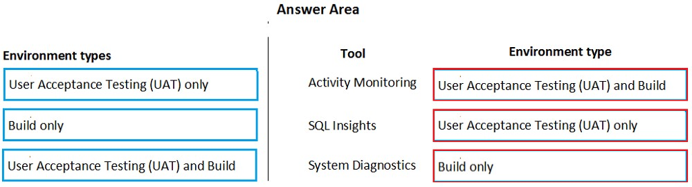
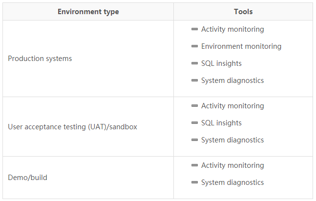
This Dynamics 365 Finance question deals with table relationships and referential integrity, specifically focusing on how to prevent the deletion of records in one table (Table1) if related records exist in another table (Table2). This is a common scenario in database design where you want to ensure data consistency and prevent orphaned records.
The question presents four options for the OnDelete property, which controls what happens when a record in a related table is deleted:
None: This option means there is no specific action defined at the database level to handle the deletion. The behavior might depend on application logic or other constraints.
Cascade: This option means that if a record in Table1 is deleted, all related records in Table2 will also be automatically deleted. This is useful for maintaining referential integrity but doesn't meet the requirement of preventing deletion of Table1 records.
Cascade + Restricted: This option is a combination of cascading and restricting. It means that if a record in Table1 is deleted, related records in Table2 will be deleted (cascade), but if there are records in Table2 that would prevent the cascade (e.g., due to other relationships), the deletion of the Table1 record will be prevented (restricted). This is more complex and doesn't directly address the requirement.
Restricted: This option is precisely what the question is looking for. It means that if you attempt to delete a record in Table1, and there are related records in Table2, the deletion will be prevented. This ensures that you cannot delete a Table1 record as long as there are dependent records in Table2.
The scenario requires preventing the deletion of records in Table1 if related records exist in Table2. The Restricted option on the OnDelete property directly addresses this requirement by preventing the deletion if related records are present.
Therefore, the correct value for the OnDelete property is Restricted.
This question is part of a series that revolves around a common scenario: creating a new form in a Dynamics 365 Finance project and needing to display tabs in a vertical alignment. This particular question proposes using the "Simple List" pattern as a solution and asks whether this pattern achieves the desired vertical tab layout.
In Dynamics 365, form patterns are predefined templates or structures that guide how forms are designed and how elements are laid out on them. They help ensure consistency and efficiency in form development. The "Simple List" pattern, as the name suggests, is typically used for displaying a simple list of records, often in a grid format. It's one of the basic building blocks for creating forms in Dynamics 365.
The core issue here is whether the "Simple List" pattern inherently supports or is designed for vertical tab alignment. Tabs are a way to organize different sections or categories of information within a form, and their orientation (horizontal or vertical) can significantly impact the form's usability and how users interact with the data. Vertical tabs are less common than horizontal tabs but can be useful in certain scenarios, such as when there are many tabs or when the content within each tab is extensive.
Now, let's consider the "Simple List" pattern. It's primarily designed for displaying a straightforward list of records. While it does provide a basic structure for a form, it doesn't inherently include tabs, let alone dictate their orientation. Tabs and their alignment are usually handled by other patterns or through custom design. The "Simple List" pattern focuses on the list itself, not on complex layouts with tabs.
Given this understanding, applying the "Simple List" pattern alone would not result in a form with vertically aligned tabs. It might provide the foundation for a list of records, but it doesn't address the tab layout aspect. Achieving vertical tabs would likely require a different pattern or additional customization beyond the basic "Simple List" structure.
Therefore, the solution does not meet the goal. The answer is no.
This drag-and-drop question focuses on understanding the structure of Dynamics 365 Finance, specifically how different components are organized within standard models. Models are a fundamental concept in Dynamics 365 development, serving as containers for organizing code, metadata, and other elements. Knowing which model a component belongs to is essential for developers to navigate, modify, and extend the application effectively.
The question asks you to map four components (Ledger, Tax, Cost Accounting, and Electronic Reporting) to their respective models. Let's break down each component and its likely model affiliation based on standard Dynamics 365 Finance architecture:
Ledger: This component is a core part of the financial functionality in Dynamics 365. It deals with the general ledger, chart of accounts, and fundamental accounting processes. In the standard model structure, Ledger typically belongs to the Application Foundation model. The Application Foundation model contains core elements and frameworks that are essential for the basic functioning of the application.
Tax: This component handles tax-related configurations, calculations, and reporting. It's closely related to financial processes but often has its own specific configurations and logic. Tax is also typically part of the Application Foundation model, as it's a fundamental component used across different modules.
Cost Accounting: This component deals with more advanced cost management features, such as cost allocation, cost analysis, and inventory valuation. While it interacts with core financial processes, it often has more specialized functionality. Cost Accounting typically belongs to the Application Suite model. The Application Suite model contains more specialized and feature-rich modules that build upon the foundation.
Electronic Reporting: This component is used for configuring and generating electronic reports, often for regulatory or compliance purposes. It's a more specialized tool that interacts with various parts of the system to extract and format data. Electronic Reporting typically resides in the Application Foundation model, as it provides a generic framework for reporting across different modules.
Based on this understanding, we can map the components to their respective models:
Therefore, Ledger, Tax, and Electronic Reporting should be dragged to Application Foundation, and Cost Accounting should be dragged to Application Suite.
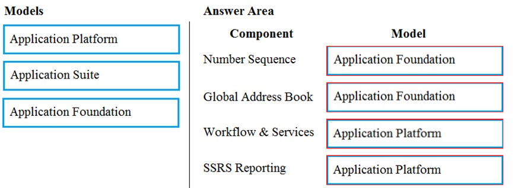
This question is another one in the series about creating a form in Dynamics 365 Finance and needing to display tabs vertically. This time, the proposed solution is to apply the "Table of Contents" pattern, and we need to determine if this pattern achieves the desired vertical tab alignment.
In Dynamics 365, form patterns provide standardized structures for designing forms. The "Table of Contents" pattern, as the name suggests, is often used for forms that serve as a central point of navigation or configuration, similar to a table of contents in a book. It typically involves a list of sections or categories that users can navigate through.
The key question here is whether the "Table of Contents" pattern inherently supports vertical tab alignment. Unlike the "Simple List" pattern discussed earlier, the "Table of Contents" pattern is specifically designed for scenarios where a vertical arrangement of navigation elements is needed. This pattern often uses tabs or a similar navigation structure aligned vertically to allow users to switch between different sections or categories of information.
The "Table of Contents" pattern is well-suited for scenarios where you have multiple related forms or sections that need to be accessed from a central location. The vertical arrangement of tabs in this pattern facilitates navigation and implies an order of completion or a logical grouping of items.
Given this understanding, applying the "Table of Contents" pattern would indeed result in a form with vertically aligned tabs. It's designed to provide a structured, navigable layout with vertical tabs as a key feature.
Therefore, the solution meets the goal. The answer is yes.
This drag-and-drop question centers on Dynamics 365 Supply Chain Management and the tools used for monitoring system performance. Effective performance monitoring is crucial in any enterprise system to identify bottlenecks, diagnose issues, and ensure smooth operation. The question tests your knowledge of which specific tools are best suited for different performance monitoring requirements.
Let's break down each requirement and analyze which tool is the most appropriate:
Monitor the execution of a specific method: This requirement calls for a tool that can trace the execution of code at a granular level, allowing you to see how long a particular method takes to run and potentially identify performance issues within that method. The Trace Parser is designed for this purpose. It allows you to capture detailed traces of code execution, including method calls, and analyze their performance.
Monitor the execution of long-running queries: This requirement focuses on database performance, specifically identifying slow or inefficient queries that might be impacting the system. SQL Insights is the ideal tool for this task. It provides detailed information about SQL query execution, including execution plans, duration, and resource consumption, allowing you to pinpoint problematic queries.
Monitor the health of the environment: This requirement needs a tool that provides a broad overview of the system's health, including infrastructure, services, and overall performance metrics. The LCS Environment Monitoring tool is designed for this purpose. It offers a dashboard view of various environmental metrics, allowing you to monitor the overall health and identify potential issues at a glance.
Now, let's match the tools to the requirements based on this analysis:
Therefore, you should drag Trace Parser to "Monitor the execution of a specific method," SQL Insights to "Monitor the execution of long-running queries," and LCS Environment Monitoring to "Monitor the health of the environment."
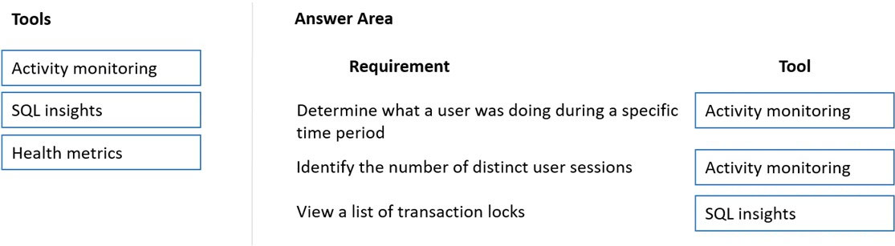
This question focuses on troubleshooting performance issues in a Dynamics 365 Supply Chain Management implementation, specifically after installing an Independent Software Vendor (ISV) product from Microsoft AppSource. The scenario highlights a common challenge in enterprise systems where third-party solutions can sometimes introduce performance problems.
The core task is to identify the cause of the slowdown observed in certain screens after the ISV product installation. Let's analyze the provided options and determine which Lifecycle Services (LCS) tool or functionality is most appropriate:
Considering the scenario, the most likely cause of the slowdown is related to how the ISV product interacts with the database. The ISV product might have introduced inefficient queries or database operations that are impacting performance. Therefore, the most appropriate tool to determine the cause of the issue is the one that provides detailed insights into SQL Server performance.
Thus, the answer is SQL Insights.
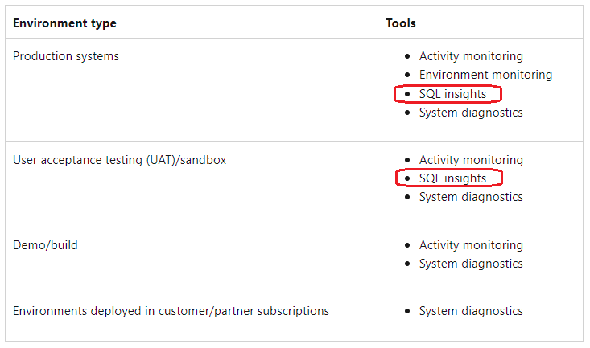
This question focuses on understanding the difference between synchronous and asynchronous integrations in Dynamics 365 Finance and recommending when to use asynchronous integration. This is a crucial aspect of system design, as the choice between synchronous and asynchronous patterns can significantly impact performance, scalability, and user experience.
Let's briefly define the two types of integration:
Synchronous Integration: In this pattern, the requesting system (client) sends a request and waits for an immediate response from the receiving system (server). The client is essentially blocked until the server completes the operation and sends back a response. This is like making a phone call – you wait on the line for the other person to answer and respond.
Asynchronous Integration: In this pattern, the client sends a request but doesn't wait for an immediate response. The server acknowledges the request and processes it later, potentially notifying the client when it's complete. This is like sending an email – you send it and continue with other tasks, expecting a response later.
Now let's analyze each scenario and determine if asynchronous integration is suitable:
A retailer requires all new customer data captured at point of sale (POS) terminals through the day sent back to the system: This scenario involves capturing data throughout the day and sending it back to the central system. The data doesn't necessarily need to be processed in real-time. Asynchronous integration is suitable here, as the POS terminals can send the data in batches, and the central system can process it later without blocking the POS operations.
A retailer wants to ensure gift card balances are communicated back to the system from point of sale (POS) terminals in near real-time: This scenario requires near real-time communication to ensure accurate gift card balances. Synchronous integration would be more appropriate here, as the POS terminal needs to know the updated balance immediately to authorize transactions.
A manufacturer wants to move production data from an on-premises deployment Dynamics 365 Finance in near real-time: This scenario also suggests a need for near real-time data synchronization. While asynchronous integration could be used, synchronous integration might be preferred to ensure that the production data is updated as quickly as possible for accurate reporting and decision-making.
A warehouse wants to track movement of all inventory from scanners to the system: This scenario involves tracking inventory movements, and depending on the specific business requirements, near real-time updates might be necessary. If immediate updates are crucial for inventory accuracy and operational efficiency, synchronous integration would be a better choice.
Based on this analysis, the scenario where asynchronous integration is most suitable is the one involving the retailer capturing customer data at POS terminals throughout the day. The data doesn't require immediate processing and can be sent back to the system in batches.
Therefore, the correct answer is A retailer requires all new customer data captured at point of sale (POS) terminals through the day sent back to the system.
This question deals with troubleshooting performance issues in a cloud-based Dynamics 365 Finance production environment. Specifically, it focuses on using the Environment Monitoring tool within Lifecycle Services (LCS) to diagnose the reported slow response times. The task is to identify two features of this tool that would be most helpful in this scenario.
Let's analyze each option and its relevance to diagnosing performance issues:
Considering the scenario of slow response times in the production environment, the most relevant features would be those that provide insights into the environment's performance metrics and database performance.
Therefore, the two features that should be used are Health metrics and SQL insights.
This question revolves around creating a software deployable package in Dynamics 365 Supply Chain Management to move a customization from a development environment to a test environment. Deployable packages are the standard mechanism for packaging and deploying customizations and code changes in Dynamics 365.
Let's analyze each option and see how it fits into the process of creating a deployable package:
Based on this analysis, the two valid methods for creating a deployable package are using Azure DevOps to queue a build that creates and uploads the package, or using Visual Studio to create the package directly and then upload it to the asset library.
Therefore, the two possible ways to achieve the goal are: In Azure DevOps, queue a build from the corresponding branch and upload the package to the asset library and In Visual Studio, create a Dynamics 365 deployment package and upload the package to the asset library.
This question centers on triggering an integration in Dynamics 365 Finance based on the start of a specific process, and it asks which tool is best suited for retrieving the status from a Production order to initiate this integration. This involves understanding the different mechanisms available in Dynamics 365 for monitoring events and triggering external processes.
Let's analyze each option and its suitability for this scenario:
The scenario requires an integration to be triggered when a specific process starts, implying a need for an event-driven approach. Business events are designed precisely for this purpose. They allow you to define specific events within Dynamics 365 that, when triggered, can initiate external processes or integrations.
Therefore, the correct tool to use is Business event.
This is a Dynamics 365 Finance "Hotspot" question about deploying code changes from a Development environment to a Standard Acceptance Test environment. The scenario involves a typical development workflow where code is developed, checked into source control (Azure DevOps), and then needs to be deployed to a testing environment.
Let's break down the steps involved and analyze the options provided for each step:
Step 1: Creating a deployable package
Step 2: Making the package available for deployment
Step 3: Applying the package to the target environment
Based on this analysis, the correct sequence of actions is to build the code in the DevOps pipeline, which will create a deployable package, then store that package in the Asset library, and finally, in the target environment's LCS page, select "Maintain" and then "Apply updates" to deploy the package.
Therefore, the first option should be Build the code in the DevOps pipeline, the second option should be Asset library, and the third option should be Select Maintain and Apply updates.
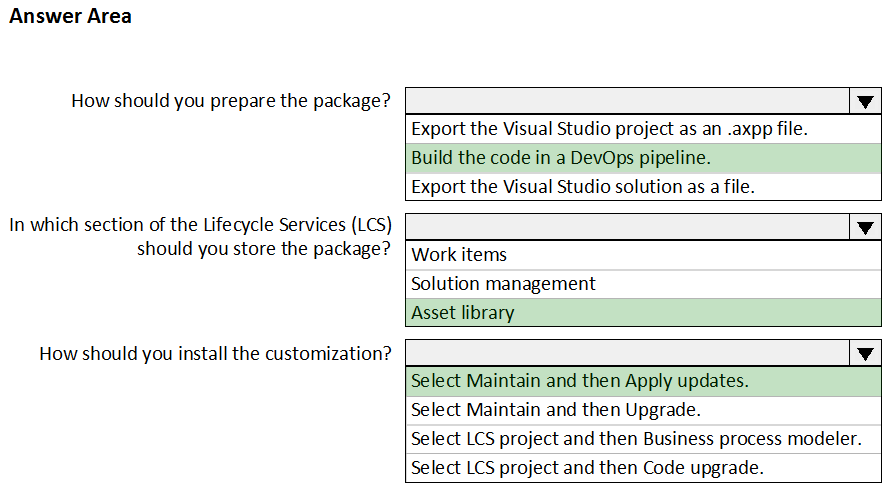
This question delves into version control and code comparison within the context of Dynamics 365 Finance development using Visual Studio and Azure DevOps (or Team Foundation Server). The scenario involves a developer who has made changes to an existing custom class but encounters version conflicts with the latest checked-in version, indicating that someone else has also modified the same class.
The task is to compare the latest code in source control (the latest changeset) with the developer's local changes to understand the differences and resolve the conflicts. Let's analyze the options provided:
The question states that the developer has opened the latest changeset in Team Explorer. This means they are currently viewing the most recent version of the code that has been checked into source control. The goal is to compare this latest version with the changes the developer has made locally in their workspace.
Therefore, the correct option is Compare with Workspace Version.
This question focuses on configuring a workflow in Dynamics 365 Finance, specifically within a user acceptance testing (UAT) environment. The goal is to ensure that a specific user can only approve purchase requisitions if they meet a certain status requirement. This involves understanding the different workflow elements available in Dynamics 365 and how they can be used to control the approval process.
Let's analyze each option and determine its suitability for achieving the goal:
To achieve the goal of allowing a specific user to approve purchase requisitions only if they are in a specific status, you need a combination of elements that define the approval process and check the status condition.
Therefore, the two options that should be configured are Approval process and Conditional decision. You would use the "Approval process" to define the approval step and assign it to the specific user, and you would use the "Conditional decision" to check the purchase requisition's status before the workflow reaches the approval step.
This drag-and-drop question focuses on setting up a C# console application to interact with Dynamics 365 Finance OData service endpoints. OData (Open Data Protocol) is a standardized protocol for creating and consuming RESTful APIs, and it's commonly used for integrating with Dynamics 365.
The question assumes that the application registration process is complete and you have the necessary details to connect to Dynamics 365. The task is to arrange the steps required to ensure the console application can successfully interact with the OData services.
Let's analyze the provided actions and determine their logical order:
Based on this analysis, the logical sequence of actions is to first add the OData V4 client code generator, then point the MetaDataDocumentURI variable to the Dynamics 365 Finance instance's metadata endpoint, and finally generate the proxy classes using the code generator.
Therefore, the correct order is: Add the OData V4 client code generator, Point the MetaDataDocumentURI variable to the Dynamics 365 Finance instance, Generate proxy classes.
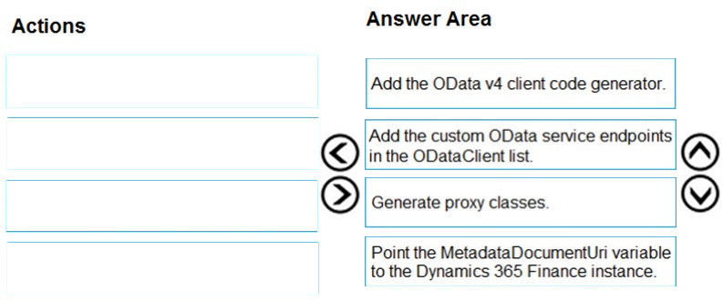
This question deals with version control in Dynamics 365 Supply Chain Management development, specifically using Visual Studio and its integration with a version control system like Azure DevOps or Team Foundation Server. The scenario involves multiple users working on a custom form, and the task is to find out which user added a specific line of code.
Let's analyze each option and see how it relates to tracking changes in version control:
Open the object in Object Designer, select the title of the object, and then right-click View History: This option is incorrect. There's no "Object Designer" in the context of modern Dynamics 365 Finance and Operations development with Visual Studio. Development is done directly within Visual Studio, and version control integration is through Team Explorer or Source Control Explorer.
In Solution Explorer, navigate to the object and right-click View History: Solution Explorer in Visual Studio is where you manage the files and projects within your solution. If the form is part of your solution, you can access version control options, including "View History," by right-clicking the form's file in Solution Explorer. This will show you the history of changes made to that specific file, and you can then examine individual changesets to see who made what changes.
Using Visual Studio, navigate to the object. Add the object to a new solution, and then right-click View History: This option is not efficient or necessary. You don't need to create a new solution to view the history of an object.
Using Visual Studio, navigate to the object in Application Explorer and right-click View History: Application Explorer is primarily used for browsing and working with elements in the Application Object Tree (AOT). However, it's not the primary interface for interacting with version control. The right-click context menu in Application Explorer is unlikely to provide a direct "View History" option that integrates with your version control system.
The most straightforward way to find the user who added a specific line of code is to use the version control features integrated with Visual Studio. Since the form is a custom form, it should be part of a project within a solution in Visual Studio.
Therefore, the correct answer is In Solution Explorer, navigate to the object and right-click View History.
This drag-and-drop question focuses on the steps involved in creating a workflow in Dynamics 365 Finance, specifically when using a custom approval element. The scenario highlights a common issue where an error occurs during workflow creation, and the task is to arrange the steps in the correct order to ensure the workflow is set up properly.
Let's analyze the provided actions and determine their logical sequence in the workflow creation process:
Based on this logical flow, the correct sequence of actions is to first create the workflow structure, then configure the business process steps, followed by developing the custom workflow approval component, and finally enabling the workflow for the business scenario.
Therefore, the correct order is: Create a workflow structure, Configure the business process steps, Develop the workflow approval component, Enable the workflow for the business scenario.
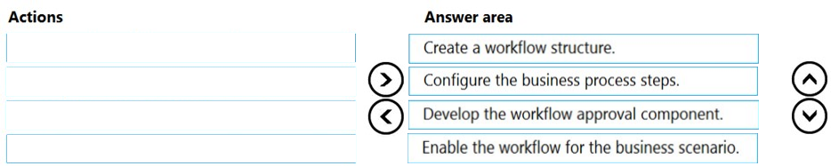
This "Hotspot" question revolves around promoting new functionality related to purchase requisitions from a development environment to a test environment in Dynamics 365 Finance and Supply Chain Management. It tests your understanding of the different methods for packaging and deploying customizations and code changes between environments.
Let's analyze the options provided for each step:
Step 1: Packaging the new functionality
Step 2: Deploying to the test environment
Based on this analysis, the correct approach is to create a deployable package from the model containing the new functionality and then apply that package to the test environment through Lifecycle Services.
Therefore, the first option should be Create a deployable package from the model, and the second option should be Apply the update to the environment in Lifecycle Services.
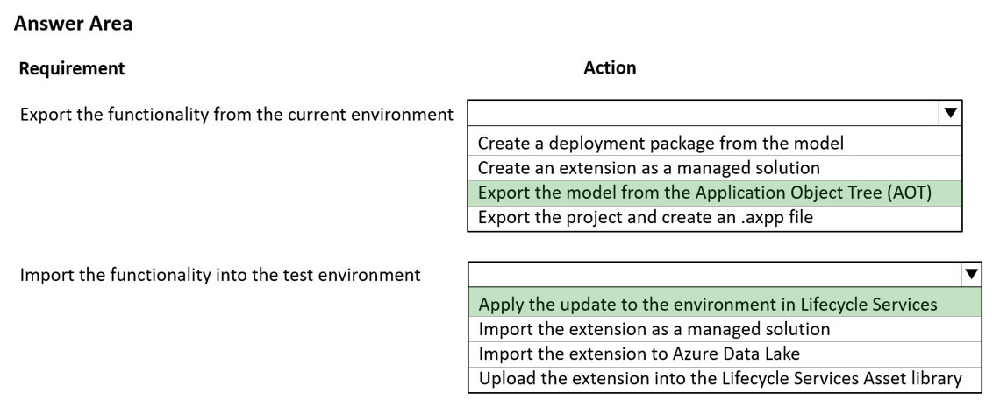
This drag-and-drop question focuses on implementing indices for new tables in a Dynamics 365 Finance environment. Understanding different types of indices and when to use them is crucial for optimizing database performance, particularly for query speed and data retrieval.
Let's break down each requirement and analyze which type of index is most appropriate:
Based on this analysis, we can map the index types to the requirements as follows:
Therefore, you should drag Primary to the first requirement, Clustered to the second requirement, and Non-clustered to the third requirement.
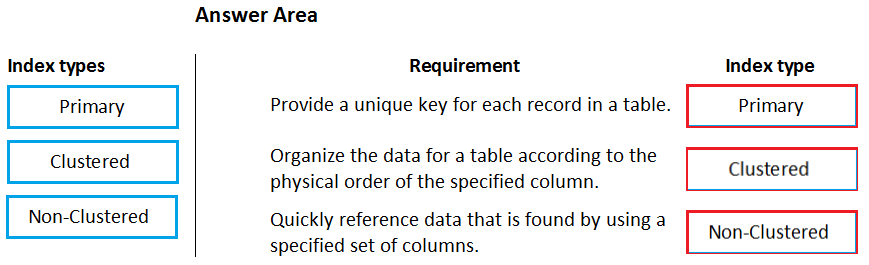
This question focuses on applying the "Simple List" form pattern in Dynamics 365 Finance development using Visual Studio. Form patterns are predefined templates that guide the structure and layout of forms, ensuring consistency and streamlining the development process. The "Simple List" pattern, as the name implies, is used for creating forms that display a basic list of records, often in a grid format.
The question asks for two ways to apply this pattern to a new form. Let's analyze each option:
Based on this analysis, the two ways to apply the "Simple List" pattern are by using the form's metadata properties and by using the form designer's "Apply pattern" option.
Therefore, the two possible ways to achieve the goal are to Use metadata properties and Use the designer.
This question concerns Extended Data Types (EDTs) in Dynamics 365 Finance, specifically within the context of storing product weights with up to four decimal places of precision. EDTs are reusable data types that allow you to define the characteristics of data elements, such as their format, size, and validation rules.
The task is to identify the standard EDT that should be extended to store product weights with the required precision. Let's analyze each option:
AmountMST: This EDT is typically used for monetary amounts in the base currency. While it might support decimal precision, it's not the most appropriate choice for storing weights, as it carries connotations related to currency and financial values.
MarkupValue: This EDT is likely used for storing markup percentages or values. It's not suitable for storing weights.
Weight: This EDT seems like a good candidate, as it's directly related to the concept of weight. However, the standard "Weight" EDT might have limitations on the number of decimal places it supports by default. It typically supports two decimal places.
WeightBase: This EDT is the base type for weight-related data. It's designed to be extended to create more specific weight types with different characteristics. Importantly, it's designed to support a higher number of decimal places, making it suitable for scenarios where more precision is needed.
The question specifically mentions the need for four decimal places of precision. While the "Weight" EDT might seem relevant, it typically has a default precision that might not meet this requirement. The "WeightBase" EDT, on the other hand, is designed to be extended and allows for customizing the number of decimal places.
Therefore, the correct EDT to extend is WeightBase.
This question is part of a series that explores different solutions for a common goal in Dynamics 365 Finance development: adding a button to a form that allows users to run a report. This particular question proposes creating an output menu item, adding it to the form button, and linking it to the report. We need to determine if this solution is correct.
Let's break down the concepts involved:
Menu Items: In Dynamics 365, menu items are used to trigger actions or navigate to different parts of the application. There are different types of menu items, including:
Form Buttons: Buttons on forms are user interface elements that trigger actions when clicked. Different types of buttons can be added to forms, including command buttons, menu item buttons, and action buttons.
The proposed solution suggests using an output menu item. This is the correct type of menu item to use for running a report. Output menu items are specifically designed to be linked to reports, and when triggered, they execute the associated report.
The solution also mentions adding the output menu item "to the form button." This might seem a bit ambiguous, but it likely refers to creating a menu item button on the form and associating it with the output menu item. A menu item button is a type of button that, when clicked, executes the linked menu item.
Finally, the solution mentions linking the report to the output menu item. This is a crucial step. When creating an output menu item, you need to specify which report it should run. This is typically done in the menu item's properties by setting the "Object" property to the name of the report.
Based on this analysis, the proposed solution is correct. Creating an output menu item, associating it with a menu item button on the form, and linking the report to the output menu item is the standard way to add a button to a form that runs a report.
Therefore, the solution meets the goal. The answer is yes.
This question is another one in the series about adding a button to a Dynamics 365 Finance form to run a report. This time, the proposed solution is to create an action menu item, add it to the form button, and link it to the report. We need to determine if this approach is correct.
Let's revisit the types of menu items in Dynamics 365:
The proposed solution suggests using an action menu item. While action menu items can be used to trigger actions, they are not the standard or recommended way to directly run a report. Action menu items are typically associated with a class that contains the logic to be executed, not directly with a report.
Although it's technically possible to create an action menu item that, through custom code in a class, executes a report, this is not the most straightforward or maintainable approach. It adds an unnecessary layer of complexity compared to using an output menu item.
The best practice for running a report from a form button is to use an output menu item. Output menu items are specifically designed for this purpose. They are directly linked to reports, and when triggered, they execute the associated report without requiring custom code.
Therefore, the proposed solution of using an action menu item is not the standard or recommended way to achieve the goal.
Thus, the answer is no.
This question continues the series about adding a button to a Dynamics 365 Finance form for running a report. This time, the proposed solution is to create a display menu item, add it to the form button, and link the report to the display menu item.
Let's recall the purpose of each menu item type:
The proposed solution suggests using a display menu item. This is fundamentally incorrect. Display menu items are designed for navigation within the user interface, specifically for opening forms. They are not intended for running reports. Linking a report to a display menu item is not a standard practice and wouldn't achieve the desired outcome of executing the report.
The correct approach, as established in previous questions, is to use an output menu item. Output menu items are specifically designed to be linked to reports, and when triggered, they execute the associated report.
Therefore, using a display menu item to run a report is not a valid solution.
Thus, the answer is no.
This question focuses on extending the validateWrite method of the SalesLine table in Dynamics 365 Finance using Chain of Command (CoC). The specific requirement is to ensure that a variable named SalesPrice is greater than or equal to zero when adding new lines. The task is to identify two correct code segments that achieve this validation using CoC.
Let's analyze each code segment:
A.
java
[ExtensionOf(tableStr(SalesLine))]
public class SalesLine_Extension
{
public boolean validateWrite()
{
boolean ret = next validateWrite();
if (this.SalesPrice < 0)
{
ret = checkFailed("SalesPrice must be greater than or equal to zero.");
}
return ret;
}
}
B.
java
[ExtensionOf(tableStr(SalesLine))]
final class SalesLine_Extension
{
public boolean validateWrite(boolean _validate = true)
{
boolean ret = next validateWrite(_validate);
if (this.SalesPrice < 0)
{
ret = false;
}
return ret;
}
}
C.
java
[ExtensionOf(tableStr(SalesLine))]
final class SalesLine_Extension
{
public boolean validateWrite()
{
boolean ret;
if (this.SalesPrice < 0)
{
ret = checkFailed("SalesPrice must be greater than or equal to zero.");
}
else
{
ret = next validateWrite();
}
return ret;
}
}
D.
java
[ExtensionOf(tableStr(SalesLine))]
final class SalesLine_Extension
{
public boolean validateWrite()
{
boolean ret = true;
try
{
next validateWrite();
if (this.SalesPrice < 0)
{
ret = checkFailed("SalesPrice must be greater than or equal to zero.");
}
}
catch (Exception::Error)
{
ret = false;
}
return ret;
}
}
Based on this analysis, code segments C and D are the correct ones. They correctly define the extension class as final, properly override the validateWrite method, call the original method using next, and implement the required validation logic.
Therefore, the correct answers are C and D.
This question revolves around modifying properties of Extended Data Types (EDTs) in Dynamics 365 Finance using extensions. EDTs are reusable data types that define the characteristics of data elements, and understanding how they can be extended and modified is crucial for customizing the system.
The scenario presents two EDTs: AccountBase (a base EDT) and AccountId (derived from AccountBase). The task is to determine which operation is possible when modifying these EDTs through extensions.
Let's analyze each option:
The question specifically asks about operations that are possible when using extensions. While creating derived EDTs is a valid customization approach, it doesn't allow for modifying the string size property. Extending a base EDT, however, does allow for increasing the string size.
Therefore, the correct answer is Create an extension for AccountBase and increase the field size.
This question is part of a series that explores different solutions for a common goal in Dynamics 365 Finance development: adding a new field to the SalesTable form using an extension. This particular question proposes navigating to the user interface forms node for the SalesTable form and modifying the form directly. We need to determine if this solution is correct.
The core concept here is understanding how extensions work in Dynamics 365 Finance. Extensions are the recommended way to customize existing objects, such as forms and tables, without directly modifying the original object's definition. This approach, known as "over-layering," helps maintain the integrity of the base application and simplifies upgrades.
The proposed solution suggests modifying the SalesTable form directly. This is incorrect in the context of extension-based development. Directly modifying the standard form would be considered over-layering, which is no longer the recommended or supported approach for most customizations in Dynamics 365 Finance.
The correct approach is to create an extension of the form. This involves right-clicking the SalesTable form in the Application Explorer (AOT) and selecting "Create extension." This creates a new object that extends the original form without modifying it directly. You can then add the new field to the form extension.
Since you are creating an extension in the Application Object Tree (AOT) the model you are creating the extension in does not matter, as long as you are creating an extension.
Therefore, the proposed solution does not meet the goal. The answer is no.
This "Hotspot" question revolves around adding a new status named "InTransit" to the SalesTable.SalesStatus field in Dynamics 365 Finance and using it in code. This involves understanding how to extend existing base enumerations (enums) and how to reference the new enum values in code.
Let's analyze the options provided for each step:
Step 1: Adding the new status
Step 2: Referencing the new status in code
Based on this analysis, the correct approach is to create an extension of the SalesStatus enum and then reference the new value in code using SalesStatus::InTransit.
Therefore, the first option should be Create an extension of SalesStatus, and the second option should be SalesStatus::InTransit.
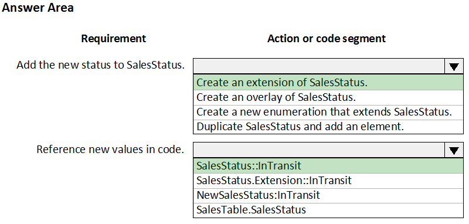
This question focuses on making a newly added field (through a table extension) available for use in forms, reports, and code within Dynamics 365 Finance. The key to achieving this lies in synchronizing the database. Database synchronization ensures that the changes made to the table structure in the development environment are reflected in the actual database, making the new field accessible throughout the application.
Let's analyze each option to determine if it achieves database synchronization:
Based on this analysis, options B, D, and E are the correct ways to achieve database synchronization, making the new field available for use.
Therefore, the correct answers are: Navigate to the Dynamics 365 menu and select Synchronize database, Set the project property for Synchronize database on build to true and build the solution, and Right-click the project and select Synchronize with database.
This drag-and-drop question focuses on creating an extension for the CustTable form in Dynamics 365 Supply Chain Management using Visual Studio and adding it to a project. Extensions are the standard way to customize existing objects in Dynamics 365 without modifying the original object's definition, ensuring a cleaner upgrade path and easier maintenance.
Let's analyze the provided actions and determine their logical sequence in the extension creation process:
Based on this analysis, the logical sequence of actions is to first right-click the CustTable form in the AOT, then select "Create extension," and finally, as a best practice, rename the newly created extension.
Therefore, the correct order is: In the Application Object Tree (AOT), right-click the CustTable form, Select Create extension, Rename the new CustTable extension.
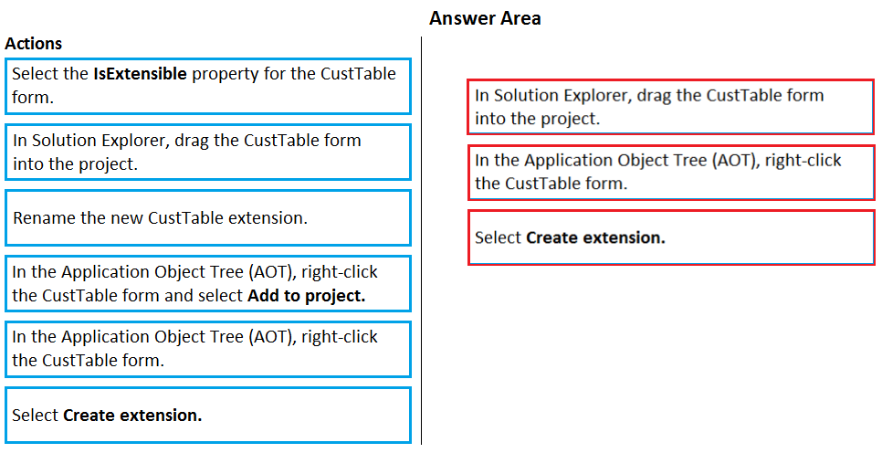